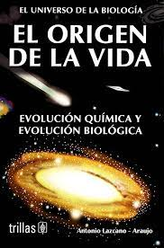

"NOTA ESPACIAL"

'Un paso para el hombre , un gran salto para la humanidad'
La misión Apolo 11 tuvo una duración de 8 días, 3 horas, 18 minutos y 35 segundos; en total algo más de 195 horas de viaje durante las cuales los ingenieros de la NASA vivieron probablemente algunos de los momentos de mayor incertidumbre de todas sus vidas. El viaje estuvo repleto de cientos de fases y maniobras, cada cual más delicada que la anterior. De hecho la cronología completa y detallada de cada una de ellas puede consultarse en la página oficial de la NASA. Nosotros, en la siguiente galería de imágenes os mostramos un resumen visual de algunos de los momentos más cruciales del épico viaje que el 16 de julio de 1969 emprendieron, en nombre de la humanidad, los astronautas americanos Neil Armstrong, Edwin E.Aldrin Jr. y Michael Collins. Los objetivos de vuelo adicionales incluyeron la exploración científica por parte de la tripulación del módulo lunar; el despliegue de una cámara de televisión para transmitir señales a la Tierra; y el despliegue de un experimento de composición del viento solar, un paquete de experimentos sísmicos y un retrorreflector de alcance láser.
Para saber más...

ORIGEN DEL UNIVERSO
La teoría más conocida sobre el origen del universo se centra en un cataclismo cósmico sin igual en la historia: el Big Bang. Esta teoría surgió de la observación del alejamiento a gran velocidad de otras galaxias respecto a la nuestra en todas direcciones, como si hubieran sido repelidas por una antigua fuerza explosiva.
Con el exitoso lanzamiento y despliegue del telescopio espacial James Webb la comunidad científica pretenden obtener más datos sobre el origen del universo. Con esta nueva herramienta en el espacio, los astrónomos pretenden buscar en el universo, tanto en el espacio como en el tiempo, cosas nunca vistas antes. Y en 2023, estas observaciones ya han dado sus frutos y permitido a los científicos saber más sobre el pasado del universo.
En abril de 2023, la Agencia Espacial Europea anunció que ya tenían pruebas de siete galaxias que serían más antiguas conocidas hasta la fecha. Según los astrónomos, estas formaciones de estrellas datarían de 650 millones de años después del Big Bang los que "las haría las galaxias más tempranas que se han podido confirmar espectroscópicamente".
La teoría más conocida sobre el origen del universo se centra en un cataclismo cósmico sin igual en la historia: el Big Bang. Esta teoría surgió de la observación del alejamiento a gran velocidad de otras galaxias respecto a la nuestra en todas direcciones, como si hubieran sido repelidas por una antigua fuerza explosiva.
Con el exitoso lanzamiento y despliegue del telescopio espacial James Webb la comunidad científica pretenden obtener más datos sobre el origen del universo. Con esta nueva herramienta en el espacio, los astrónomos pretenden buscar en el universo, tanto en el espacio como en el tiempo, cosas nunca vistas antes. Y en 2023, estas observaciones ya han dado sus frutos y permitido a los científicos saber más sobre el pasado del universo.
En abril de 2023, la Agencia Espacial Europea anunció que ya tenían pruebas de siete galaxias que serían más antiguas conocidas hasta la fecha. Según los astrónomos, estas formaciones de estrellas datarían de 650 millones de años después del Big Bang los que "las haría las galaxias más tempranas que se han podido confirmar espectroscópicamente".
Da 'click'' en la siguiente image , para saber los primeros tres primeros minutos delUniverso.
Recomendaiones Espaciales
Libros
- Origen de La vida de Antonio Lazcano 
Entretenimiento
- Estreno 'Openhaimer' , ¡Solo en cines !
- Another Life